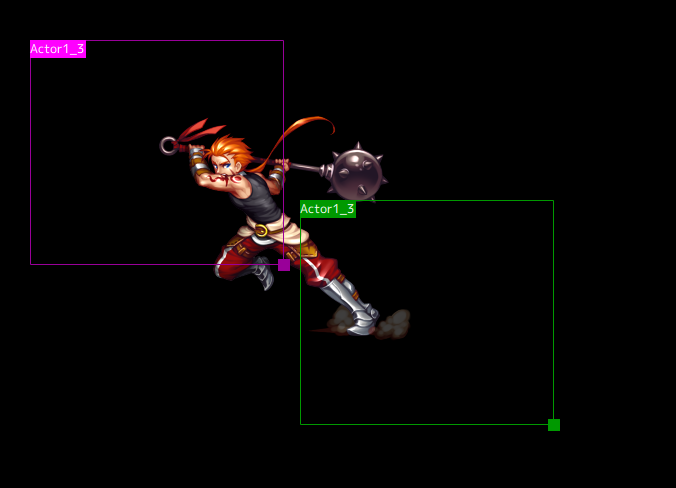

预览
预览实时显示时间线上的事件。也可以一进行些图片操作。
图片处理

选择“显示图片”事件时，将显示图片的帧。每个起点显示为紫色，每个终点显示为绿色。
通过拖动位于框架左上角的名称来移动图片的位置。如果在拖动时按住Alt键，则可以移动所有帧。
也可以通过拖动框架的右下角来更改大小。
预览实时显示时间线上的事件。也可以一进行些图片操作。
选择“显示图片”事件时，将显示图片的帧。每个起点显示为紫色，每个终点显示为绿色。
通过拖动位于框架左上角的名称来移动图片的位置。如果在拖动时按住Alt键，则可以移动所有帧。
也可以通过拖动框架的右下角来更改大小。